Software terminals are an emulation of old physical terminals like TTYs or the VT100. You will still find references to the term “TTY” in the documentation of some modern command line tools.
Command Line
Learn what a command line interface is and learn the basics of navigating and manipulating your filesystem in a Unix shell.
On this page
Table of contents
Back to the command line
Command line interfaces are still in wide use today.
What is a Command Line Interface (CLI)?
A CLI is a tool that allows you to use your computer by writing what you want to do (i.e. commands), instead of clicking on things.
It’s been installed on computers for a long time, but it has evolved “a little” since then. It usually looks something like this:
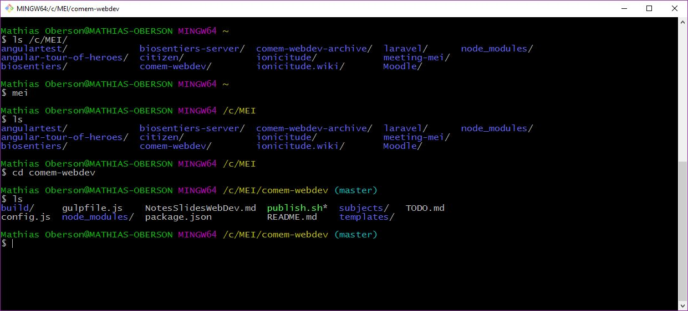
Why use it?
A CLI is not very user-friendly or visually appealing but it has several advantages:
- It requires very few resources (e.g. memory), which is convenient where resources are scarce (e.g. embedded systems, web servers).
- It can be easily automated through scripting.
- It is ultimately more powerful and efficient than any GUI for many computing tasks.
For these reasons, a lot of tools, especially development tools, don’t have any GUI and are only usable through a CLI. Or they have a limited GUI that does not have as many options as the CLI.
Thus, using a CLI is a requirement for any developer today.
Open a CLI
CLIs are available on every operating system.
On Unix-like systems (like macOS or Linux), it’s an application called the Terminal.
You can use it right away, as it’s the de-facto standard.
On Windows, the default CLI is called cmd (or Invite de commandes in French) However, it does not use the same syntax as Unix-like CLIs (plus, it’s bad).
You also have PowerShell which is better, but is not a Unix-like CLI either.
You’ll need to install an alternative.
Install WSL (Windows only)
You’re going to install the Windows Subsystem for Linux (WSL), a tool that allows you to run a Linux environment on your Windows machine, without using a virtual machine or setting up a dual boot.
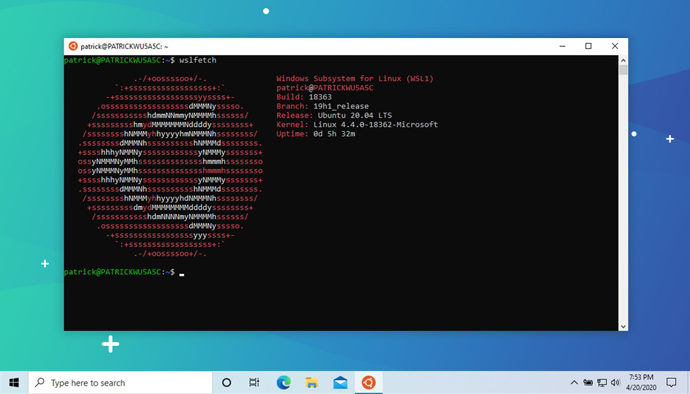
The default Linux distribution installed will be Ubuntu, which is perfect for the purposes of this course. The installation will ask you for a username and a password. We suggest you use the same username as for the rest of the course, and that you use the same password as your Windows user account’s.
Two pages describe the installation:
- The appendix at the end of this page walks through it with screenshots of each command and its output, shows how to open your Linux system again once it is installed, and covers the machine where the installation stops because virtualization is not enabled.
- The official installation instructions are Microsoft’s own reference.
Windows users: drives and copy/paste
This is how you reference or use your drives (C:, D:, etc) in the
Windows Subsystem for Linux (WSL):
$> cd /mnt/c/foo/bar
$> cd /mnt/d/foo
Copy/Paste
In a terminal, Ctrl-C already means something else: it stops the command
that is running (see stopping running
commands). It therefore can’t be used as a
shortcut to copy things from the CLI. Instead, the terminal window that the
Windows Subsystem for Linux (WSL) runs in has two shortcuts of its
own:
Ctrl-Shift-Cto copy things from the CLICtrl-Shift-Vto paste things to the CLI
How to use the CLI
When you open the CLI you will find a blank screen that looks like this:
$>
These symbols represent the prompt and are used to indicate that you have the lead. The computer is waiting for you to type something for it to execute.
Note
The prompt is not always $>.
For example, on earlier macOS versions, it used to be bash3.2$, indicating the
name of the shell (Bash) and its version.
On more recent macOS versions using the Z shell (Zsh), the prompt might
indicate your username, your computer’s name and the current directory, e.g.
jde@MyComputer ~ %.
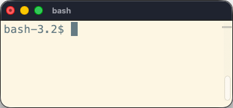
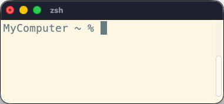
For consistency, we will always use $> to represent the prompt.
Work in progress…
When the computer is working, the prompt disappears and you no longer have control.
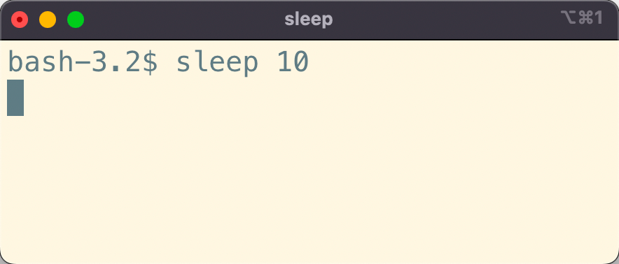
When the computer is done working, it will indicate that you are back in control by showing the prompt again.
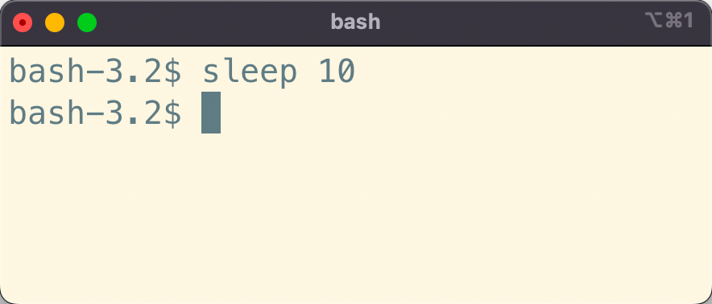
Note
The sleep command tells the computer to do nothing for the specified number
of seconds.
Writing commands
A command is a word that you have to type in the CLI that will tell the computer what to do.
The syntax for using commands looks like this:
$> name arg1 arg2 arg3 ...
Note the use of spaces to separate the different arguments of a command.
namerepresents the command you want to execute.arg1 arg2 arg3 ...represent the arguments of the command, each of them separated by a space.
Options vs. values
There are two types of arguments to use with a command (if needed):
Options usually specify how the command will behave.
By convention, they are preceded by - or --:
$> ls -a -l
We use the ls command to list the content of the current directory.
The options tell ls how it should do so:
-atells it to print all elements (including hidden ones).-ltells it to print elements in a list format, rather than on one line.
Values not preceded by anything usually specify what will be used by the command:
$> cd /Users/Batman
Here, we use the cd command to move to another directory (or change
directory).
And the argument /Users/Batman tells the command what directory we want to
move to.
Options with values
Values can also be linked to an option:
$> head -n 5 notes.txt
The head command prints the beginning of a file. In this example, it takes
one option:
-ntells it how many lines to print; it is followed immediately by5, which is the value of that option.
It then takes one value:
notes.txtis the file to print the beginning of.
There are two values in this example: one linked to the -n option, and one
used by the overall command.
Naming things when using CLI
You should avoid the following characters in directories and file names you want to manipulate with the CLI:
- spaces (they’re used to separate arguments in command).
- accents (e.g.
é,à,ç, etc).
They can cause errors in some scripts or tools, and will inevitably complicate using the CLI.
If you have a Why So Serious directory, this WILL NOT work:
$> ls Why So Serious
This command will be interpreted as a call to the ls command with three arguments: Why, So and Serious.
You can use arguments containing spaces, but you have to escape them first, either with quotation marks or backslashes:
$> ls "Why So Serious"
$> ls Why\ So\ Serious
Auto-completion
It’s not fun to type directory names, especially when they have spaces you must escape in them,
so the CLI has auto-completion. Type the first few characters of the file or directory you
need, then hit the Tab key:
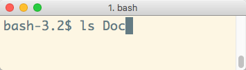
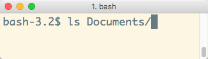
If there are multiple files or directories that begin with the same characters,
pressing Tab will not display anything.
You need hit Tab a second time to display the list of available choices:
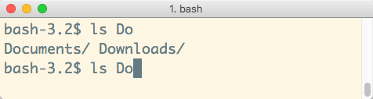
You can type just enough characters so that the CLI can determine which one you want (in this case c or w),
then hit Tab again to get the full path.
Getting help
You can get help on most advanced commands by executing them with the --help option.
As the option’s name implies, it’s designed to give you some help on how to use the command:
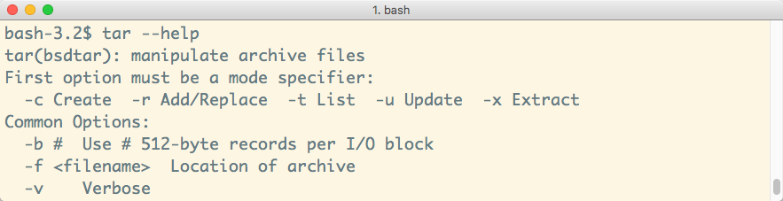
Some commands don’t have the --help option, but there are alternative sources
of information depending on what operating system you’re on:
- On Linux (including the WSL) or macOS, use
man lsto display the manual for thelscommand. - There is also tldr pages: simplified, community-driven manual
pages that show the most common uses of a command instead of all its options.
Install a client with
brew install tlrcon macOS, or withsudo apt install tldrin the WSL or on Ubuntu.
Interactive help pages
Some help pages or commands will take over the screen to display their content, hiding the prompt and previous interactions.
Usually, it means that there is content that takes more than one screen to be shown.
You can “scroll” up and down line-by-line using the arrow keys or the Enter key.
To quit these interactive documentations, use the q (quit) key.
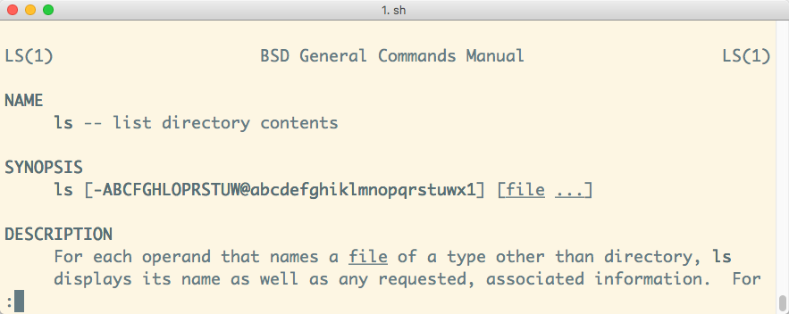
Unix Command Syntax
When reading a command’s manual or documentation, you may find some strange syntax that make little sense to you, like:
cd [-L|[-P [-e]] [-@]] [dir]
ls [-ABCFGHLOPRSTUW@abcdefghiklmnopqrstuwx1] [file ...]
Here are some explanations:
[]: Whatever’s inside is optional (ex:[-e]).|: You have to choose between options (ex:-L|-P)....: Whatever’s before can be repeated (ex:[file ...]).
Depending on the documentation, you will also see symbols like this:
<value>--option=VALUE
DON’T WRITE <value> or VALUE.
Replace it by an appropriate value for that option or argument.
Using the filesystem
The pwd command
When you open a CLI, it places you in your home directory. From there you can navigate your filesystem to go to other directories (more on that later).
But first, you might want to check where you currently are.
Use the pwd command:
$> pwd
/Users/Batman
Note
pwd means “print working directory”: it gives you the absolute
path to the directory you’re currently in.
The ls command
Now that you know where you are, you might want to know what your current directory is containing.
Use the ls command:
$> ls
(lots and lots of files)
Note
ls means “list”: it lists the contents of a directory.
By default, ls doesn’t list hidden elements.
By convention in Unix-like systems, files that start with . (a dot) are hidden.
If you want it to do that, you need to pass the -a (all) option:
$> ls -a
(lots and lots of files, including the hidden ones)
The cd command
It’s time to go out a little and move to another directory.
Suppose you have a Documents directory in your home directory, that contains
another directory TopSecret where you want to go. Use the cd (change
directory) command, passing it as argument the path to the directory you
want to go to:
$> pwd
/Users/Batman
$> cd Documents/TopSecret
$> pwd
/Users/Batman/Documents/TopSecret
This is a relative path: it is relative to the current working directory.
Absolute paths
You can also go to a specific directory anywhere on your filesystem like this:
$> cd /Users/Batman/Documents
$> pwd
/Users/Batman/Documents
This is an absolute path because it starts with a / character. It starts
at the root of your filesystem so it does not matter where you are now.
You also have auto-completion with the cd command. Hit the Tab key after
entering some letters.
The . path
The . path represents the current directory. The following commands are
strictly equivalent:
$> cd Documents/TopSecret
$> cd ./Documents/TopSecret
You can also not go anywhere:
$> pwd
/Users/Batman
$> cd .
$> pwd
/Users/Batman
Or make a compressed archive of the current directory with the tar (tape
archive) command:
$> tar -c -z -v -f /somewhere/archive.tar.gz .
This does not seem very useful now, but it will be in further tutorials.
The .. path
To go up into the parent directory, use the .. path (don’t forget the space between cd and ..):
$> pwd
/Users/Batman/Documents
$> cd ..
$> pwd
/Users/Batman
On macOS, you can also drag and drop a directory from the Finder to the CLI to see its absolute path automatically written:
$> cd
(Drag and drop a directory from the Finder, and...)
$> cd /Users/Batman/Pictures/
This does not work in the WSL: dropping a directory from the Explorer writes a
Windows path such as C:\Users\jde\Pictures, which your Linux shell does not
understand. Write the path yourself in the /mnt/c/... form instead.
At any time and from anywhere, you can return to your home directory with
the cd command, without any argument or with a ~ (tilde):
$> cd
$> pwd
/Users/Batman
$> cd ~
$> pwd
/Users/Batman
To type the ~ character, use this combination:
AltGr-^on WindowsAlt-Non Mac
These are dead keys: nothing appears on screen until you press the space bar afterwards.
Path reference
| Path | Where |
|---|---|
. |
The current directory. |
.. |
The parent directory. |
foo/bar |
The file/directory bar inside the directory foo in the current directory. This is a relative path. |
./foo/bar |
Same as the above |
/foo/bar |
The file/directory bar inside the directory foo at the root of your filesystem. This is an absolute path. |
~ |
Your home directory. This is an absolute path. |
~/foo/bar |
The file/directory bar inside the directory foo in your home directory. This is an absolute path. |
Your projects directory
Throughout this course, you will often see the following command (or something resembling it):
$> cd /path/to/projects
This means that you use the path to the directory in which you store your projects.
For example, on John Doe’s macOS system, it could be /Users/jde/Projects.
Warning
Do not actually write /path/to/projects. It will obviously fail, unless you
happen to have a path directory that contains a to directory that contains a
projects directory…
Windows users: if your username contains spaces or accents, you should NOT store your projects under your home directory. You should find a path elsewhere on your filesystem. This will save you a lot of needless pain and suffering.
The mkdir command
You can create directories with the CLI.
Use the mkdir (make directory) command to create a new directory in the current directory:
$> mkdir BatmobileSchematics
$> ls
BatmobileSchematics
You can also create a directory elsewhere:
$> mkdir ~/Documents/TopSecret/BatmobileSchematics
This will only work if all directories down to TopSecret already exist. To
automatically create all intermediate directories, add the -p (parents)
option:
$> mkdir -p ~/Documents/TopSecret/BatmobileSchematics
The touch command
The touch command updates the last modification date of a file.
It also has the useful property of creating the file if it doesn’t exist.
Hence, it’s a quick way to create an empty file in the CLI:
$> touch foo.txt
$> ls
foo.txt
The echo command
The echo command simply echoes its arguments back to you:
$> echo Hello World
Hello World
This seems useless, but can be quite powerful when combined with Unix features like redirection. For example, you can redirect the output to a file.
The > operator means ”write the output of the previous command into a file”.
This allows you to quickly create a simple text file:
$> echo foo > bar.txt
$> ls
bar.txt
If the file already exists, it is overwritten.
You can also use the >> operator, which means ”append the output of the previous command to the end of a file”:
$> echo bar >> bar.txt
The cat command
The cat command can display one file or concatenate multiple files in the CLI.
For example, this displays the contents of the previous example’s file:
$> cat bar.txt
foo
bar
This creates a new hello.txt file and displays the result of concatenating the two files:
$> echo World > hello.txt
$> cat bar.txt hello.txt
foo
bar
World
Stopping running commands
Sometimes a command will take too long to execute.
As an example, run this command which will wait one hour before exiting:
$> sleep 3600
As you can see, the command keeps executing and you no longer have a prompt.
Anything you type is ignored, as it is no longer interpreted by the shell,
but by the sleep command instead (which doesn’t do anything with it).
By convention in Unix shells, you can always terminate a running command by
typing Ctrl-C (press the C key while holding the Control key).
Warning
Note that Ctrl-C forces termination of a running command. It might not
have finished what it was doing.
Nano
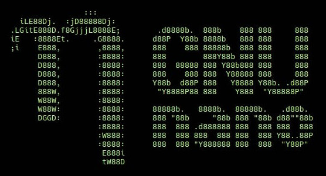
Nano: a simple CLI editor to keep your sanity.
Editing a file without a window
Sooner or later you will have to edit a file on a machine that has no graphical interface, like the server you will be given later in this course. You then need an editor that runs in the terminal.
Nano is one, it is simple to use, and it is installed on most Unix-like systems (including the WSL). It is the one we suggest you use.
Open a file by running the nano command with the path to the file you want to
create or edit:
$> nano test.txt
Editing files with nano
Editing files is much more straightforward and intuitive with nano. Once the file is open, you can simply type your text and move around with arrow keys:

Nano also helpfully prints its main keyboard shortcuts at the bottom of the
window. The most important one is ^X for Exit. In keyboard shortcut parlance,
the ^ symbol always represents the control key.
So, to exit from nano, type Ctrl-X.
Saving files
When you exit nano with Ctrl-X, it will ask you whether you want to save your
changes:

Press the y key to save or the n key to discard your changes.
Confirming the filename
When saving changes, nano will always ask you to confirm the filename where the changes should be saved:

As you can see, it tells you the name of the file you opened. Now you can:
- Simply press
Enterto save the file. - Or, change the name to save your changes to another file (and keep the unmodified original).
Setting nano as the default editor
Editing the shell configuration will depend on your shell: for Zsh (the default
terminal shell on macOS) or Bash shell (the default in the WSL and most Linux
systems), you have to set the $EDITOR environment variable. You can do that by
adding the line export EDITOR=nano to your ~/.zshrc or ~/.bashrc file
depending on which shell you are using. Run the command for your shell to add it
at the end of the file:
$> echo 'export EDITOR=nano' >> ~/.bashrc # on WSL or Linux
$> echo 'export EDITOR=nano' >> ~/.zshrc # on macOS
Remember that you must relaunch your terminal for this change to take effect.
If you are unsure of what shell you are using, type in the following command. The output will display the name of your current shell.
$> echo $0
bash
Now that you know how to use nano, you can also edit your Bash profile file with
the following command: nano ~/.bashrc.
Note
On Ubuntu, you can list available editors and choose the default one with the following command:
$> sudo update-alternatives --config editor
Vim
Vim is an infamous CLI editor originally developed in 1991 for the Unix operating system.
Note
The name comes from “vi improved”, because Vim is an improved clone of an earlier editor: vi (from “visual”), developed in 1976.
Help, Vim opened and I can’t get out
Some developer tools open Vim for you, without asking. Git, for example, opens an editor when you describe a change, and on many systems that editor is Vim. You find yourself in a full-screen editor where what you type does nothing, or something you did not ask for, and where none of the usual ways out work.
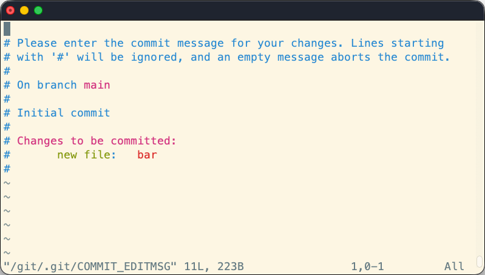
If this happens (and it will), there’s one imperative rule to follow:
DO NOT PANIC!
To leave Vim without saving anything, type this, in this order:
- The
Esckey. :q!— a colon, the letterq, then an exclamation mark.- The
Enterkey.
You are back at your prompt, and the file is unchanged.
To avoid meeting Vim by accident in the first place, tell your tools to use nano instead: see setting nano as the default editor.
Should you learn it?
Knowing how to escape Vim is enough for this course: nano is the editor we suggest you use, and every exercise that asks you to edit a file on a server works with it.
Vim is worth more than that, though, if you want to be at home on the command line. Sometimes it’s just the only editor you have (e.g. on a server). It is also much more powerful than nano and will let you edit text at the speed of light once you know your way around it. Some developers use nothing else.
If that tempts you, the appendix on Vim at the end of this page explains how it works, walks you through one complete edit, and points you at a tutorial.
The PATH variable
When you type a command in the CLI, it will try to see if it knows this command by looking in some directories to see if there is an executable file that matches the command name.
$> rubbish
bash: rubbish: command not found
This means that the CLI failed to find the executable named rubbish in any of
the directories where it looked.
The list of the directories (and their paths) in which the CLI searches is
stored in the PATH environment variable, each of them being separated with a
:.
You can print the content of your PATH variable to see this list:
$> echo $PATH
/usr/local/bin:/bin:/usr/bin:/custom/dir
Understanding the PATH
Assuming your PATH looks like this:
$> echo $PATH
/usr/local/bin:/bin:/usr/bin:/custom/dir
What happens when you run the following command?
$> ls -a -l
- The shell will look in the
/usr/local/bindirectory. There is no executable namedlsthere, moving on… - The shell will look in the
/bindirectory. There is an executable namedlsthere! Execute it with arguments-aand-l. - We’re done here. No need to look at the rest of the
PATH. If there happens to be anlsexecutable in the/custom/dirdirectory, it will not be used.
Finding commands
You can check where a command is with the which command:
$> which ls
/bin/ls
If there are multiple versions of a command in your PATH, you can add the -a
option to list them all:
$> which -a git
/opt/homebrew/bin/git
/usr/bin/git
Note
Remember, the shell will use the first one it finds, so in this example it
would use /opt/homebrew/bin/git if you type git, completely ignoring
/usr/bin/git.
Using non-system commands
Many development tools you install come with executables that you can run from the CLI (e.g. Git, Node.js, MongoDB).
Some of these tools will install their executable in a standard directory like /usr/local/bin, which is already in your PATH.
Once you’ve installed them, you can simply run their new commands.
Git and Node.js, for example, do this.
However, sometimes you’re downloading only an executable and saving it in a directory somewhere that is not in the PATH.
Custom command example
Run the following commands to write a simple Hello World shell script and make it into an executable:
$> mkdir -p ~/hello-program/bin
$> printf '#!/bin/sh\necho Hello World\n' > ~/hello-program/bin/hello
$> chmod +x ~/hello-program/bin/hello
The printf command prints its argument, here interpreting \n as a line
break, and the > operator writes that output into the file (as seen in the
echo command). The file you have just created contains
these two lines:
#!/bin/sh
echo Hello World
The first line tells the system which program should run the script. The second line is the script itself.
A new file is not executable, so the chmod (change mode) command is
used to add (+) the permission to execute it.
You should now be able to find it in the ~/hello-program/bin directory:
$> ls ~/hello-program/bin
hello
It’s now installed, we can find it using the CLI, but it still cannot be run. Why?
$> hello
command not found: hello
Executing a command in a directory that’s not in the PATH
You can run a command from anywhere by writing the absolute path to the executable:
$> ~/hello-program/bin/hello
Hello World
You can also manually go to the directory containing the executable and run the command there:
$> cd ~/hello-program/bin
$> ./hello
Hello World
When the first word on the CLI starts with /, ~/, ./ or ../, the shell
interprets it as a file path. Instead of looking for a command in the PATH,
it simply executes that file.
But, ideally, you want to be able to just type hello, and have the script be executed.
For this, you need to add the directory containing the executable to your PATH variable.
Updating the PATH variable
To add a new path in your PATH variable, you have to edit a special file, used
by your CLI interpreter (shell). This file depends upon the shell you are using:
| CLI | File to edit |
|---|---|
| WSL / Bash | ~/.bashrc |
| Terminal / Zsh | ~/.zshrc |
Open the adequate file (.bashrc for this example) from the CLI with nano or
your favorite editor if it can display hidden files:
$> nano ~/.bashrc
Add this line at the bottom of your file (use i to enter insert mode if
using Vim):
export PATH="$HOME/hello-program/bin:$PATH"
If you’re in nano, press Ctrl-X, then answer Yes and confirm the filename.
If you’re in Vim, press Esc when you’re done typing, then :wq and Enter to
save and quit.
Does it work?
Warning
Remember to close and re-open your CLI to have the shell reload its configuration file.
You should now be able to run the Hello World shell script as a command simply
by typing hello:
You don’t even have to be in the correct directory:
$> hello
Hello World
$> cd
$> pwd
/Users/jde
$> hello
Hello World
And your CLI knows where it is:
$> which hello
/Users/jde/hello-program/bin/hello
It knows this because the directory containing the script is now in your PATH:
$> echo $PATH
/Users/jde/hello-program/bin:/usr/bin:/bin:/usr/sbin:/sbin:/usr/local/bin
What have I done?
You have added a directory to the PATH:
export PATH="$HOME/hello-program/bin:$PATH"
This line says:
- Modify the
PATHvariable. - In it, put the new directory
$HOME/hello-program/binand the previous value of thePATH, separated by:.
The next time you run a command, your shell will first look in this directory for executables, then in the rest of the PATH.
Common mistakes
- What you must put in the
PATHis NOT the path to the executable, but the path to the directory containing the executable. - You must re-open your CLI for the change to take effect: the shell
configuration file (e.g.
~/.bashrc) is only applied when the shell starts.
Appendix: unleash your terminal
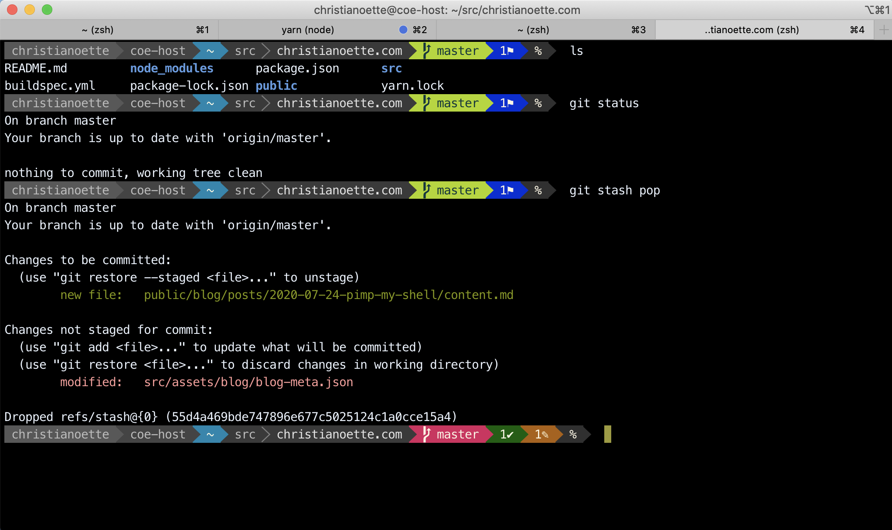
This appendix is a collection of things you may enjoy once the command line stops feeling foreign. None of it is needed for this course, and none of it is installed for you.
Oh My Zsh
Command-line shells have been worked on for a very long time. Modern shells such as the Z shell (Zsh) have a whole community that created many plugins to simplify your daily command-line work.
On macOS or Linux, you may want to install Oh My Zsh to fully unleash the power of your Terminal. It has plugins to integrate with Homebrew, Git, various programming languages like Ruby, PHP, Go, and much more.
On Windows, you can install Zsh and Oh My Zsh in the WSL as well.
Other tools for the command line lover
bat: acatclone with wingstldr: bettermanpagesfzfto quickly find filesackto search for text in files (grepalternative)rsyncfor incremental file transfers (cp&scpalternative)
A Terminal multiplexer like:
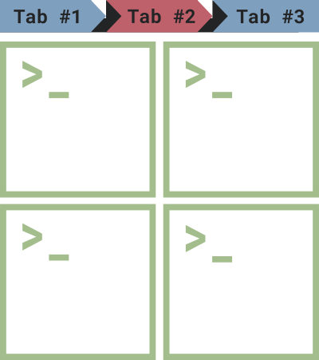
Appendix: Vim
This appendix is for the curious. Nothing in this course requires Vim — nano does everything the exercises ask for — but if you want to learn the editor rather than merely escape it, this is where to start.
Open a file by running the vim command with the path to the file you want to
create/edit:
$> vim test.txt
How Vim works
Vim can be unsettling at first, until you know how it works.
Let go of your fear. And your mouse, it’s mostly useless in Vim. You control Vim by typing.
The first thing to understand with Vim is that it has 3 modes:
- Normal mode (the one you’re in when Vim starts).
- Insert mode (the one to use to insert text).
- Command mode (the one to use to save and/or quit).
To go into each mode, use these keys:
| From | Type | To go to |
|---|---|---|
| Normal | i |
Insert |
| Normal | : |
Command |
| Insert/Command | Esc |
Normal |
Since the same keys do different things in different modes, you must always
know which one you are in. The bottom line of the window tells you: in
Insert mode, Vim prints -- INSERT -- in the bottom-left corner; in
Command mode, it shows the : and the command you are typing there; in
Normal mode, it shows neither, only the name of the file it opened, or
nothing at all. Whenever you are lost, press Esc and look there.
Normal mode
The Normal mode of Vim is the one you’re in when it starts. What you type in this mode does not go into your file: each key is a command instead, which is why typing into Vim when it has just opened seems to do nothing, or something strange.
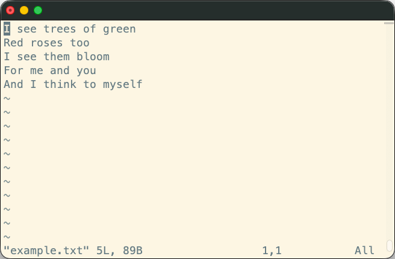
Note
The ~ characters down the left side of the window are not in your file.
Vim draws them to mark the lines after the last one, so an empty file is a full
screen of them.
To write something, you first have to switch to the Insert mode.
At anytime, you can hit the Esc key to go back to the Normal mode.
Insert mode
The Insert mode is the one in which Vim behaves like the editor you expect: what you type goes into the file.
You enter it from the Normal mode, with the key that matches where you want to start typing:
| Command | Effect |
|---|---|
i |
Insert before the character under the cursor |
a |
Append after the character under the cursor |
o |
Open a new empty line below the current one |
Vim prints -- INSERT -- in the bottom-left corner to tell you that you are in
this mode. Type your text, then press Esc to go back to the Normal mode.
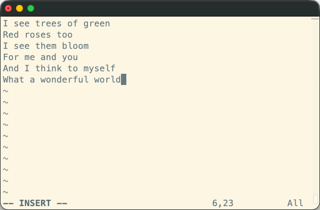
Back in normal mode: moving and editing
Now that your file has some text in it, you can move the cursor around with the arrow keys.
You can also use some commands to interact with the text:
| Command | Effect |
|---|---|
x |
Delete the character under the cursor |
dw |
Delete a word, with the cursor on its first letter |
dd |
Delete the complete line the cursor is on |
u |
Undo the last command |
Moving without the arrow keys
The arrow keys work, but Vim power users move with four letters instead, sitting right under the fingers of your right hand on the home row:
| Key | Moves the cursor |
|---|---|
h |
Left |
j |
Down |
k |
Up |
l |
Right |
h and l are the leftmost and rightmost of the four, which is the easiest way
to remember which is which. j looks like an arrow pointing down, which takes
care of the other two.
This only works in Normal mode: in Insert mode, those keys type the
letters h, j, k and l into your file, as they should.
It feels pointless until you stop moving your hand to the arrow keys and back
several times a minute. Vim is far from the only program that uses these keys
to move around: less, man pages and many other terminal tools do too, so
the habit pays off outside Vim.
Command mode
The Command mode, which you can only access from the Normal mode, is the one you’ll mostly use to save and/or quit.
To enter the Command mode, hit the : key. The colon appears at the
bottom of the window, and so does everything you type after it: a command
is never typed into your text. Press Enter to run it, or Esc to abandon it
and go back to the Normal mode.
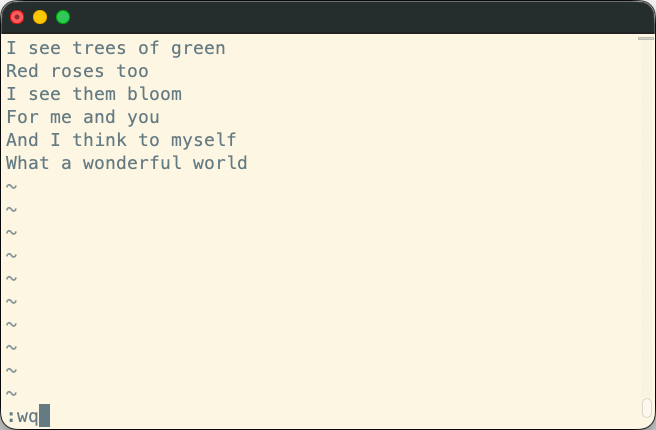
From there, you can use some commands:
| Command | Effect |
|---|---|
q |
Quit Vim (will fail if you have unsaved modifications) |
w |
Write (save) the file and all its modifications |
q! |
Force (!) Vim to quit (any unsaved modification will be lost) |
wq or x |
Write and quit, i.e. save the file then quit Vim. |
Trying it yourself
The quickest way to stop being afraid of Vim is to go through one complete edit from beginning to end. Move to a directory where you can safely create a file, then:
- Run
vim test.txtto open a new, empty file. You are in Normal mode: there is no-- INSERT --at the bottom of the window. - Press
ito switch to Insert mode.-- INSERT --appears in the bottom-left corner. - Type a line of text, for example
Hello from Vim. - Press
Escto go back to Normal mode. The-- INSERT --indicator disappears. - Type
:wq. The three characters appear at the bottom of the window instead of in your text. PressEnter: Vim saves the file and quits. - Run
cat test.txtto check that your line is there.
Do it a few times, and the three modes stop being mysterious.
Learning more
You now know enough Vim to open a file, change it and get out again. To go further, Vim comes with its own interactive tutorial, which takes roughly half an hour:
$> vimtutor
It is installed together with Vim on most systems. If your own machine does not have it, the SSH exercise server you will connect to later in this course does. Open Vim is an equivalent tutorial that runs in your browser.
Appendix: installing the WSL step by step
This appendix is for Windows users, and shows the installation of the WSL as it actually happens, command by command, so that you can compare what your screen shows with what it should show. The official instructions are the reference.
Do you already have it?
Type Ubuntu in the start menu. If an Ubuntu application is there and opens
on a prompt, the WSL is already installed and there is nothing to do here:
that application is your command line for this course, as the last section of
this appendix shows.
If it is not there, install it as follows.
Install the WSL itself
Type PowerShell in the start menu and open Windows PowerShell.
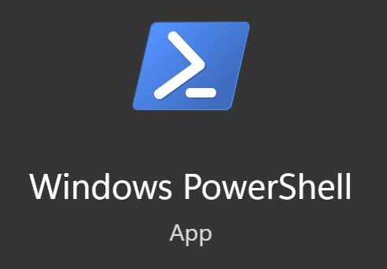
Run the installation command in the window that opens:
PS C:\WINDOWS\system32> wsl --install
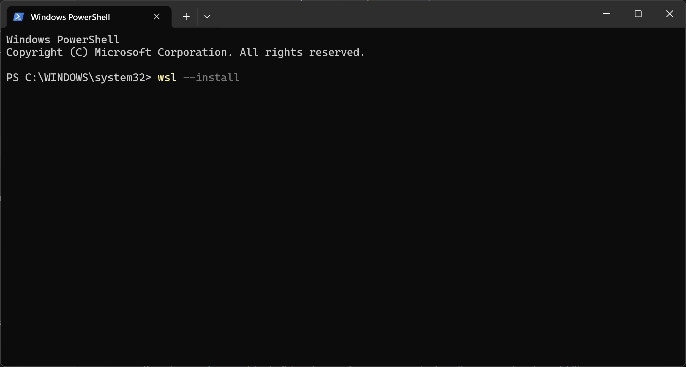
It downloads and installs the Windows Subsystem for Linux, then enables the Windows components it needs:
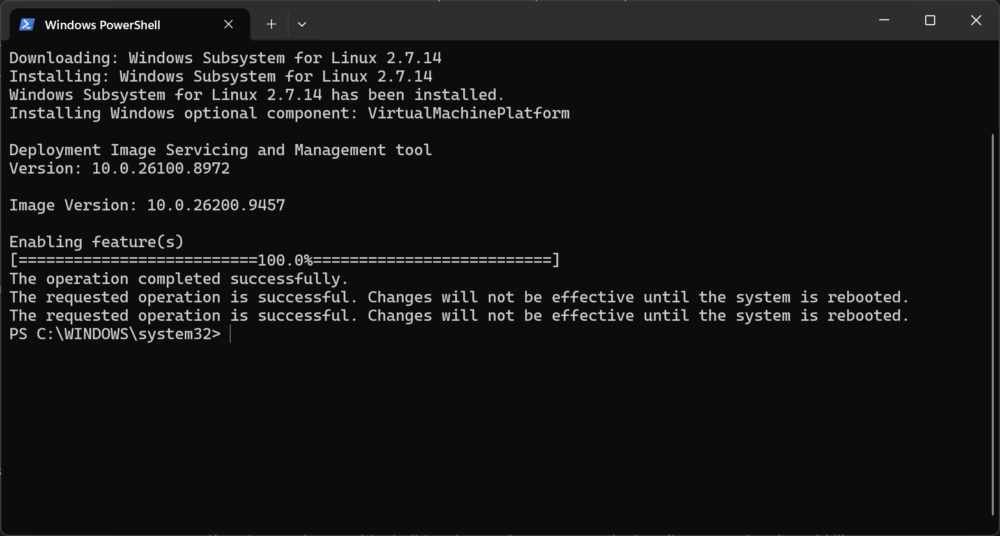
Reboot your machine before going further, as the last two lines ask. The components that were just enabled are not active until you do.
Install Ubuntu
After the reboot, open PowerShell again and install the Linux distribution used in this course:
PS C:\WINDOWS\system32> wsl --install -d Ubuntu
It asks you for the username and password of the Linux user account it creates. They have nothing to do with your Windows account: this is a user of the Linux system you just installed.
If you don’t know what username to pick, we suggest you choose the username shown on your dashboard, the one you will use for the rest of the course. You will type it often, and you will see it in the prompt every time you open the WSL. You can always change it later.
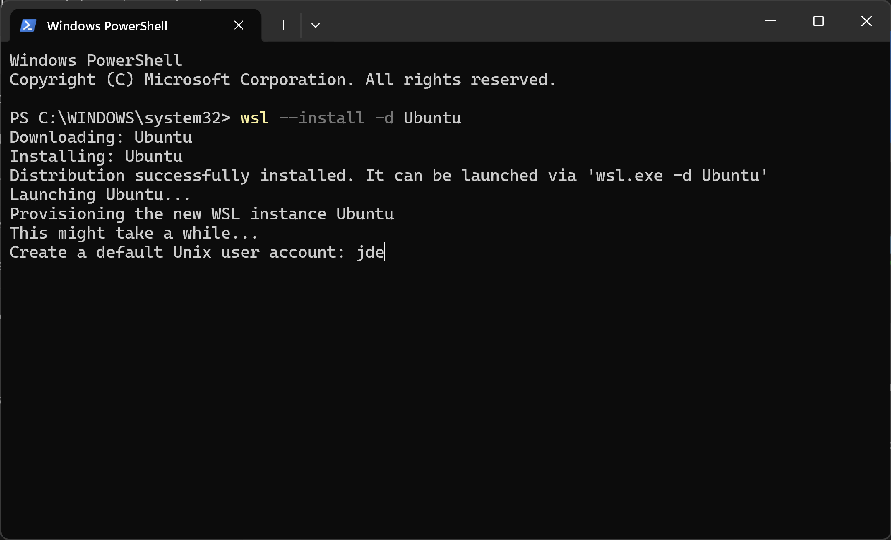
Warning
Did the installation stop with an error instead of asking you for a username? See if it says virtualization is not enabled.
Once the account is created, the installation leaves you in your new Linux system, in that same PowerShell window.
Open the WSL again later
The installation also put an Ubuntu application in your start menu. This
is how you come back to your Linux system — the next session, or whenever you
work on an exercise at home. You do not install anything again, and you do not
go through PowerShell: type Ubuntu in the start menu and open it.
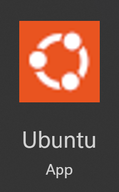
It opens on the prompt you will be working in for the rest of this course:
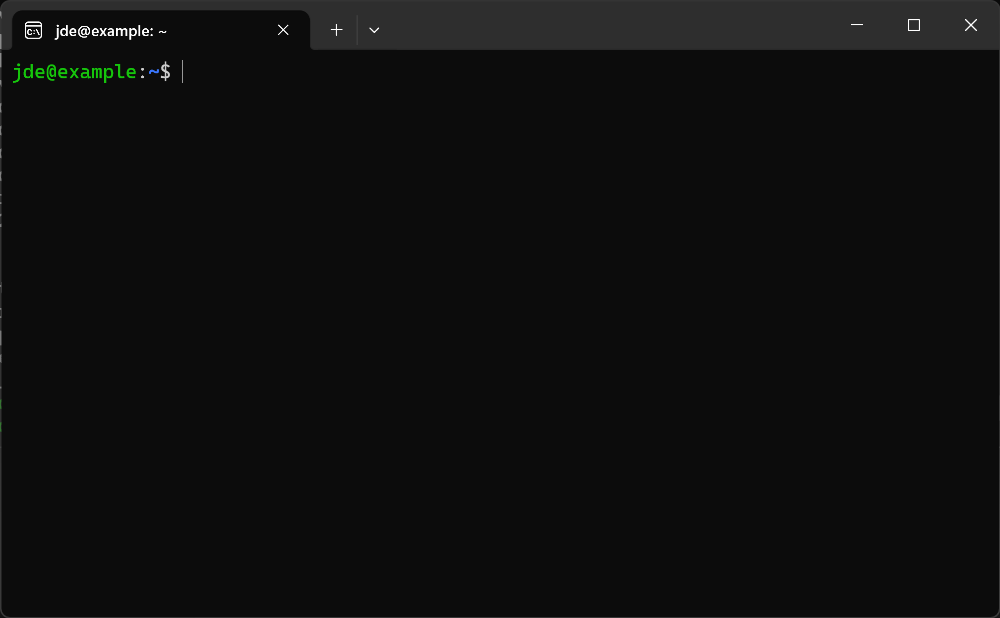
The jde@example part names your Linux user and machine, so yours will show the
username you chose during the installation.
If it says virtualization is not enabled
The installation of Ubuntu may stop with this error:
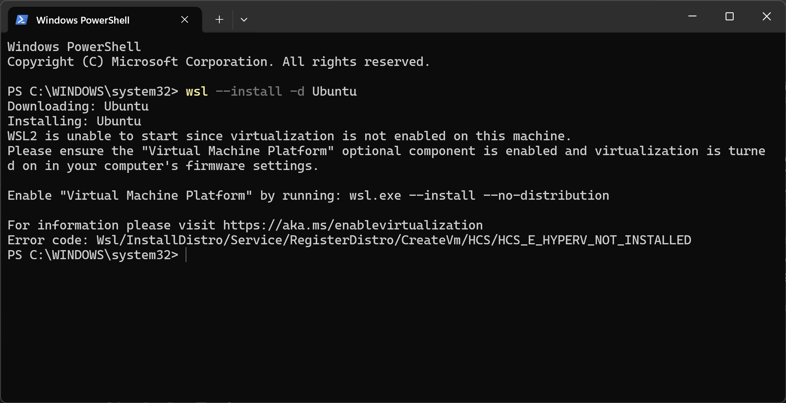
The WSL runs Linux in a lightweight virtual machine, and your processor can only do that if virtualization is enabled in your machine’s firmware (the BIOS or UEFI settings). It is disabled by default on some machines. Nothing you type in Windows can turn it on.
To check, open the Task Manager, go to the Performance tab and select CPU. Look at the Virtualization line:
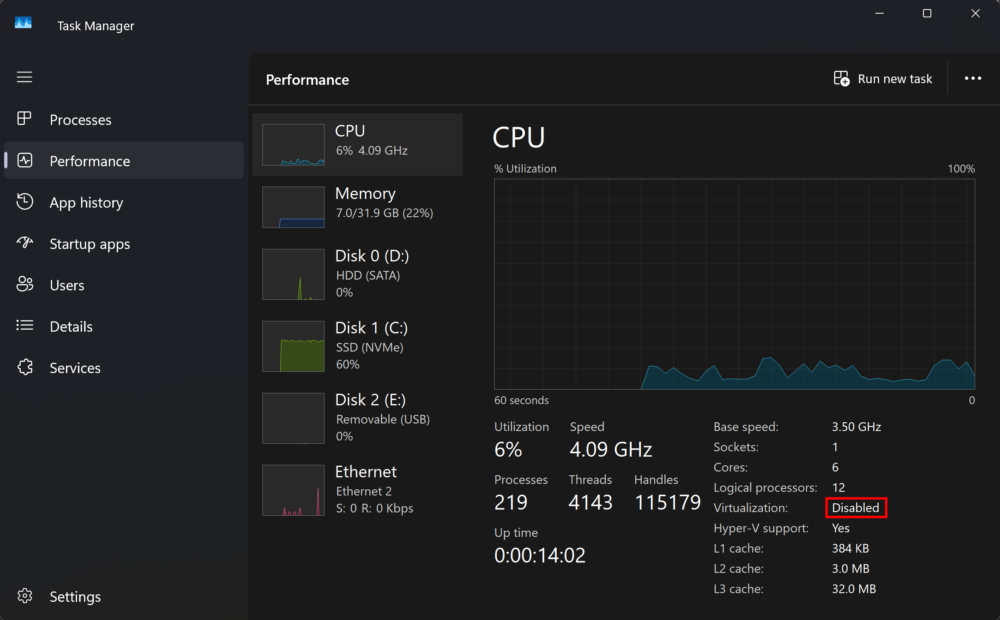
If it says Disabled, reboot your machine and enter its firmware settings —
which key to press depends on the manufacturer, and the boot screen usually says
it (typically a function key like F2 or F12). Look for an option named
Virtualization Technology, SVM Mode, Intel VT-x or AMD-V, enable it,
save and reboot. Then run the installation command again.